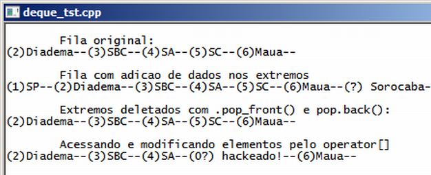

Curso completo de linguagem C++
Gameprog - Escola de programação de jogos digitais
Contato: gameprog.br@gmail.com
track27.html
27. <deque>
27.1 Visão geral
A estrutura deque é implementada pela classe genérica deque. Essa estrutura
é conhecida como fila dupla porque permite movimentação de entrada e saída
de elementos em suas extremidades.

// deque_tst.cpp
// Esse programa exemplica o uso de filas com dupla extremidade
#include <iostream>
#include <string>
#include <deque>
using namespace std;
deque<string> filaDupla;
string cidade[10];
void mostrar_filaDupla() {
for(int ncx = 0; ncx < filaDupla.size(); ++ncx )
cout << filaDupla[ncx] << "--";
cout << endl << endl;
} // fim da função: mostrar_filaDupla()
int main() {
system("color f0"); system("title deque_tst.cpp"); cout << endl;
// Nosssa lista de cidades preferidas
cidade[1] = "(1)SP"; cidade[2] = "(2)Diadema"; cidade[3] = "(3)SBC";
cidade[4] = "(4)SA"; cidade[5] = "(5)SC"; cidade[6] = "(6)Maua";
// Vamos inserir dados na frente da fila
filaDupla.push_front( cidade[4] );
filaDupla.push_front( cidade[3] );
filaDupla.push_front( cidade[2] );
// Vamos inserir dados no fundo da fila
filaDupla.push_back(cidade[5] );
filaDupla.push_back(cidade[6] );
cout << "\tFila original: " << endl;
mostrar_filaDupla();
cout << "\tFila com adicao de dados nos extremos" << endl;
filaDupla.push_front ( cidade[1] );
filaDupla.push_back ( "(?) Sorocaba" );
mostrar_filaDupla();
// Vamos deletar alguns itens...
cout << "\tExtremos deletados com .pop_front() e pop.back():\n";
filaDupla.pop_front();
filaDupla.pop_back();
mostrar_filaDupla();
cout << "\tAcessando e modificando elementos pelo operator[]" << endl;
filaDupla[03] = "(0?) hackeado!";
mostrar_filaDupla();
cout << endl;
system("pause");
} // endfunction: main()
Declarando uma fila dupla
deque<string> filaDupla;
Com a sintaxe exemplificada acima você declara uma fila dupla.
Adicionando e excluindo elementos na fila dupla
.push_front(elemento) - Este método coloca um elemento na frente da fila
.push_back(elemento) - Este método coloca um elemento no final da fila
.pop_front(elemento) - Este método deleta o elemento da frente da fila
.pop_back(elemento) - Este método deleta o elemento do final da fila
// Vamos inserir dados na frente da fila
filaDupla.push_front( cidade[4] );
filaDupla.push_front( cidade[3] );
// Vamos inserir dados no fundo da fila
filaDupla.push_back(cidade[5] );
filaDupla.push_back( "Sorocaba" );
// Vamos deletar alguns itens...
cout << "\tExtremos deletados com .pop_front() e pop.back():\n";
filaDupla.pop_front();
filaDupla.pop_back();
Acessando os elementos na fila dupla
.front() - Este método retorna o primeiro elemento da fila
.back() - Este método retorna o último elemento fila
cout << filaDupla.front() << endl;
cout << filaDupla.back() << endl;
Você pode usar a sintaxe de array para acessar elementos da fila usando
normalmente os colchetes com a posição do elemento:
filaDupla[03] = "(0?) hackeado!";
void mostrar_filaDupla() {
for(int ncx = 0; ncx < filaDupla.size(); ++ncx )
cout << filaDupla[ncx] << "--";
cout << endl << endl;
} // fim da funcao: mostrar_filaDupla()